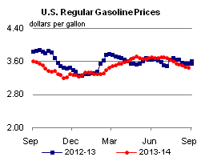
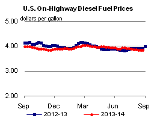
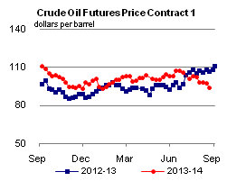
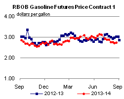
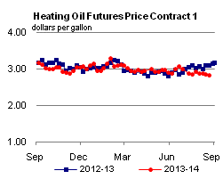
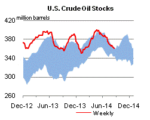
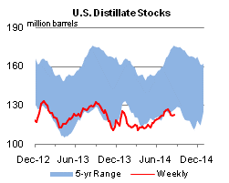
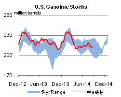
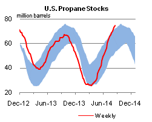

Released: August 27, 2014
Next Release: September 4, 2014
U.S. retail gasoline prices fall heading into Labor Day, following crude prices lower
The U.S. average retail price for regular gasoline was $3.45/gallon (gal) this past Monday, the lowest price on the Monday before Labor Day since 2010 (Figure 1). The average price at the pump is now 25 cents/gal lower than it was at the end of June. A lower North Sea Brent crude oil price is the main driver of the decline in the gasoline price. The current price of Brent is lower than it was both in June 2014 and heading into the Labor Day weekend last year (Figure 2).
{kind=link}
{kind=link}
The recent decline in gasoline prices largely reflects movements in crude oil prices. In June of this year, Brent spot prices reached their year-to-date maximum level of $115/barrel (bbl), well above the average of $102/bbl through the first 22 days of the current month and $100/bbl on August 22. Current Brent prices are below their August average level over the past 3 years, which ranged between $110-$113/bbl. In 2010, crude oil prices were much lower because the global economy was just beginning to recover from the 2008-09 recession that reduced oil demand growth.
The recent reduction in the Brent spot price likely reflects the market's perception of reduced risk for Iraqi oil exports and news reports of increasing Libyan oil exports. Additionally, some economic indicators released over the summer suggest that global demand growth may be weaker than expected. Finally, the end of the third quarter and early fourth quarter mark the autumn turnaround season for refineries, and reduced crude buying ahead of cuts in refinery runs is likely putting some downward pressure on prices.
In addition to changes in the price of crude oil, changes in retail gasoline prices are also affected by changes in wholesale gasoline crack spreads (the difference between the price of wholesale gasoline and the price of crude oil). Crack spreads reflect gasoline market conditions, such as the gasoline supply/demand balance. Gasoline crack spreads east of the Rockies have been stable over the summer, remaining near June levels, and as a result have had little impact on changes in retail prices (Figure 3). In New York Harbor, the U.S. Gulf Coast, and Chicago, crack spreads dipped in late July as U.S. refineries, particularly in the Midwest and Gulf Coast, ran at record levels, increasing supplies of gasoline available to the market. However, those declines were erased in August because of operational glitches in fluid catalytic cracking (FCC) units at several refineries. The FCC unit is important for the production of gasoline and the recent malfunctions have reduced gasoline supply and contributed to lower total U.S. gasoline inventories. Inventories have declined 5.9 million barrels in the past three weeks. However, declining crude oil prices have more than offset the modest increase in crack spreads.
{kind=link}
Regional retail gasoline prices in the United States vary significantly. Prices are lowest on the Gulf Coast at an average of $3.24/gal, while prices are highest on the West Coast at an average of $3.83/gal. It is common for the Gulf Coast and West Coast to have the lowest and highest regional prices, respectively. Gulf Coast prices are often low compared with prices in other locations because the Gulf Coast is home to half of the U.S. refining capacity, produces more gasoline than it consumes, and does not rely on supply transferred from other U.S. regions or imported from the global market. West Coast prices are often higher than those in other areas of the country because of the more restrictive gasoline specifications in California, the region's dominant market. California specification gasoline is difficult and more costly to produce. As of August 25, Rocky Mountain prices averaged $3.65/gal and East Coast and Midwest prices both averaged $3.40/gal.
In its August Short-Term Energy Outlook, EIA forecasts that the U.S. average retail price of gasoline will decline modestly through the end of the year, reaching a monthly average low of $3.30/gal in December. Gasoline prices often fall after Labor Day as seasonal demand wanes and the market shifts to winter fuel specifications, which make greater use of low-cost fuel components. In recent years, gasoline crack spreads have been very weak in the fourth quarter after refineries emerge from autumn maintenance and begin supplying gasoline to a market with relatively low demand. This weakness has generally translated into lower retail prices. As always, the forecast is subject to considerable uncertainty. For example, either unplanned refinery outages or unanticipated Brent crude oil price increases, which might result from numerous factors, could result in higher gasoline prices than are currently expected.
U.S. gasoline and diesel fuel prices fall
The U.S. average retail price of regular gasoline decreased two cents to $3.45 per gallon as of August 25, 2014, ten cents lower than last year at this time. The East Coast and Gulf Coast prices both decreased three cents, to $3.40 per gallon and $3.24 per gallon, respectively. The West Coast price fell two cents to $3.83 per gallon. The Rocky Mountain price decreased one cent to $3.65 per gallon. The Midwest price gained less than a penny to remain at $3.40 per gallon this week.
The national average diesel fuel price shed a penny to total $3.82 per gallon, nine cents lower than last year at this time. The East Coast price decreased two cents to $3.86 per gallon, as did the Midwest price which moved lower to $3.76 per gallon. The Gulf Coast and the West Coast both fell one cent to $3.73 per gallon and $4.01 per gallon, respectively. The Rocky Mountain price gained less than a penny to $3.88 per gallon.
Propane inventories continue to rise
U.S. propane stocks increased by 1.9 million barrels last week to 74.7 million barrels as of August 22, 2014, 12.6 million barrels (20.4%) higher than a year ago. Gulf Coast inventories increased by 1.0 million barrels and Midwest inventories increased by 0.6 million barrels. East Coast inventories and Rocky Mountain/ West Coast inventories both increased by 0.1 million barrels. Propylene non-fuel-use inventories represented 5.0% of total propane inventories.
Text from the previous editions of This Week In Petroleum is accessible through a link at the top right-hand corner of this page.
|  |  | ||||||
| Retail Data | Change From Last | Retail Data | Change From Last | ||||
| 08/25/14 | Week | Year | 08/25/14 | Week | Year | ||
| Gasoline | 3.454 | Diesel Fuel | 3.821 | ||||
|  |  | ||||||||||||||||||||||||||
|
 | ||||||||||||||||||||||||||
| *Note: Crude Oil Price in Dollars per Barrel. | |||||||||||||||||||||||||||
|  |  | ||||||
|  |  | ||||||
| Stocks Data | Change From Last | Stocks Data | Change From Last | ||||
| 08/22/14 | Week | Year | 08/22/14 | Week | Year | ||
| Crude Oil | 360.5 | Distillate | 122.8 | ||||
| Gasoline | 212.3 | Propane | 74.709 | ||||